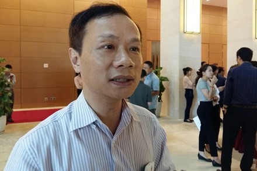

<section class="section-wrap" style="margin-top: 60px;">
	<div class="thongtin-wrap" style="position: relative;">
					<div class="quangcao" style="width: 275px; height: 800px; position: absolute; top: 20px; left: 0px;">
						
						
					</div>
	<div class="container infomation-content">
		<div class="infomation-content-us">
			<h1 class="the-article-title cms-title">Thi trắc nghiệm dễ chấm nhưng không đánh giá đúng năng lực</h1>
			<p class="the-article-summary cms-desc">
				Theo ông Phạm Tất Thắng, thi trắc nghiệm dễ chấm, dễ lượng hóa nhưng lại không đánh giá được năng lực thực sự của học sinh, nhiều khi là xác suất như thi bằng lái xe máy, ôtô.
				</p>
			<div class="the-article-body cms-body">
					<p>Bộ GD&amp;ĐT vừa công bố phương án tổ chức kỳ thi THPT quốc gia năm 2017, lấy kết quả để xét công nhận tốt nghiệp THPT và làm căn cứ để tuyển sinh đại học, cao đẳng. Theo đó, 4/5 bài thi theo hình thức trắc nghiệm, chỉ có bài thi môn Ngữ văn tự luận.</p>
					<p> Ông Phạm Tất Thắng - Phó chủ nhiệm Ủy ban Văn hóa, Giáo dục, Thanh niên, Thiếu niên và Nhi đồng của Quốc hội đã chia sẻ xung quanh vấn đề này.</p>
					<p><em>- Thưa ông, có ý kiến cho rằng thi trắc nghiệm sẽ dẫn đến việc đánh giá không đúng năng lực của học sinh, quan điểm của ông về vấn đề này như thế nào?</em></p>
					<p>- Trước hết, việc tổ chức dạy học như thế nào thì phải có hình thức thi cử, đánh giá phù hợp để có thể đánh giá được kiến thức của học sinh. </p>
					<p>Thứ hai, dù là trắc nghiệm hay tự luận thì mỗi phương án đều có ưu thế riêng. Trắc nghiệm thì dễ chấm, dễ lượng hóa, dễ chính xác nhưng lại không đánh giá được năng lực thực sự của học sinh, nhiều khi là xác suất như thi bằng lái xe máy, ôtô. Tức là có khi cứ tích A cả, có khi có xác suất trúng bao nhiêu trong đấy rồi. Nhiều khi cũng không đánh giá được khả năng diễn đạt, phân tích, tổng hợp của học sinh.</p>
					<p>Việc tổ chức thi, theo tôi, thứ nhất, ảnh hưởng đông đảo mọi người trong xã hội, đặc biệt là học sinh và phụ huynh học sinh, ảnh hưởng tới tương lai của các em liên quan việc tuyển sinh đại học, cao đẳng, cho nên việc thi cử nên có tính ổn định tương đối.</p>
					<p>Thứ hai, mỗi hình thức tự luận hay trắc nghiệm đều có ưu thế riêng của nó. Cho nên làm sao kết hợp được để vừa thuận tiện cho quá trình tổ chức thi, chấm thi, công bố kết quả, nhưng cũng vừa đánh giá được năng lực thực sự của học sinh một cách khách quan, công bằng. </p>
					<p>Với kỳ thi quốc gia, chúng ta có hai mục tiêu là đánh giá học sinh có trình độ để tốt nghiệp phổ thông và làm căn cứ để tuyển sinh đại học, cao đẳng hệ chính quy.</p>
					<table class="picture" align="center">
					<tbody>
					<tr>
					<td >
					</tr>
					<tr>
					<td class="pCaption caption">Ông Phạm Tất Thắng cho rằng thi trắc nghiệm&nbsp;nhiều khi là xác suất như thi bằng lái xe máy, ôtô. Ảnh: <em>Lao Động.</em></td>
					</tr>
					</tbody>
					</table>
					<p><em>- Kỳ thi THPT năm 2016 có lượng thí sinh ảo đăng ký xét tuyển vào các trường đại học, cao đẳng rất nhiều, vậy kỳ thi THPT năm 2017, theo ông cần có giải pháp như thế nào để&nbsp;khắc phục?</em></p>
					<p>- Qua làm việc với Bộ GD&amp;ĐT, chúng tôi thấy rằng kỳ thi năm 2016, Bộ đã có một số giải pháp. Ví dụ mỗi trường, thí sinh được đăng ký 2 nguyện vọng, còn sau đó nếu thay đổi mới thay đổi. Đã đăng ký vào trường nào, nộp hồ sơ nguyện vọng vào trường nào thì phần mềm của bộ sẽ tự động khóa để thí sinh không đăng ký được những trường khác. </p>
					<p>Theo tôi, đó là những giải pháp tích cực. Tuy nhiên việc tổ chức mới kỳ thi chung trên phạm vi cả nước với số lượng thí sinh lớn, và chúng ta cũng phải tôn trọng nguyện vọng của học sinh và sự thay đổi của các em trong quá trình làm hồ sơ. Cho nên, chúng ta cũng phải chấp nhận một tỷ lệ thí sinh ảo nào đó.</p>
					<p>Tôi nghĩ, Bộ GD&amp;ĐT phải tiếp tục có những giải pháp làm sao công bố kỳ thi, phương thức tổ chức thi, và đặc biệt là phương thức xét tuyển của các trường đại học, cao đẳng sớm hơn để thí sinh có điều kiện suy nghĩ, lựa chọn nguyện vọng của mình một cách chính xác với sở trường của các em và gia đình. Điều này cũng đảm bảo để cho các trường có thể tuyển được đủ số lượng thí sinh theo khả năng đào tạo của mình.</p>

					<p><em>- Kỳ thi năm 2017 sẽ được tổ chức theo cụm và mỗi thí sinh sẽ có một đề riêng. Vậy theo ông liệu có khả thi?</em></p>
					<p>- Bộ GD&amp;ĐT có chủ trương kỳ thi năm 2017 vẫn là cụm theo tỉnh, nhưng không có 2 hội đồng thi ở một tỉnh nữa, mà giao cho Sở GDĐT và các trường đại học hỗ trợ. Tôi cho rằng đó là cần thiết, vì chúng ta xác định mục tiêu chính của kỳ thi này là xét tốt nghiệp THPT và việc xét duyệt THPT này là mặt bằng chung.</p>
					<p>Còn việc mỗi em có một đề thi riêng có thể thực hiện được về mặt kỹ thuật, đó là chuẩn bị sẵn một ngân hàng đề với một số lượng đề nhất định, còn với mỗi một thí sinh chúng ta chỉ có việc nhân, sao đề và tổ chức cho các em làm bài. Theo tôi về cơ bản nó không khác gì so với những năm trước đây.</p>

					</div>
		</div>
	</div>
	</div>
</section>